import os
from ladle.diagrams import (
Define,
Scope,
V,
E,
draw_diagram
)
from ladle.core import checkLogs
from ladle.viz import draw_nx
import pytest
import asyncioBasic Diagram Examples
Imports
Intro
Ladle diagrams are written as a graph of nodes and edges.
There are 3 reserved node names: * State: a node that is used to store and access state between node executions * Start: the start of the diagram * End: the end of the diagram
The edges can be of three types: * state: an edge from the State node to another node, used for either setting or getting part of the state * conditional: edges with a possible condition which are used for deciding which node to run next * parallel: edges that are used to run multiple nodes in parallel
Note that each node can have multiple edges coming in and out of it. But all non state incoming edges must either be all conditional or all parallel. The same goes for outgoing edges.
Edges can not only define the flow of the diagram, but also which part of the output of a node is passed to the input of another node.
Lets look at how to define and runa basic diagram.
Defining ports of an edge
#TODO make diagram with ** port for kwarg spread
with Define('edge_signature') as D:
# we define the nodes with V
# Start and End are reserved node names which are automatically added to the diagram
# if no function is provided, the node simply passes all its inputs as a dictionary to the next node
V('Start')
V('End')
# we define the edges with E
# the edge signature is Start.output_port->End.input_port
# this means that the output of the Start node is passed to the input of the End node
E('Start->End(input_port = output_port)')
# for our convenience, exiting the Define block automatically draws the diagram
# outside of the Define block,
# we can now run the diagram
# to make sure we get a fresh copy of the diagram in cases where we want have multiple instances of the same diagram
# we can use the GetDiagram function
d = D()
# with checkLogs(name='ladle.diagrams'):
for trace in d.run({'output_port':1,'other_port':2}):
# every node that is run will return a trace object
# this trace object contains the input and output of the node as well as some other useful information
# we can use this trace to both debug the diagram
# and also to perform other side effects such:
# * as logging
# * writing responses back to the user
trace.pprint()
# we access the output of the diagram via the output property
# note that the output_port of the Start node is passed to the input_port of the End node
# the other port is discarded
d.output
assert d.output == {'input_port':1}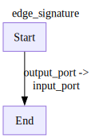
Node Start:
{ 'input': {'other_port': 2, 'output_port': 1},
'output': {'other_port': 2, 'output_port': 1}}
================================================================================
Node End:
{'input': {'input_port': 1}, 'output': {'input_port': 1}}
================================================================================Edge types
def plus(x,y):
return x+y
# EXPLAIN start and end are by default
# with checkLogs(name='__main__'):
with Define('multiedge',type='flow') as D:
V('plus',plus,
inputs=[
'Start(x=a,y=b)',
],
outputs=['End']
)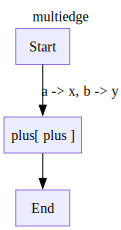
log_file = 'log.txt'
d=D()
for trace in d.run({'a':1,'b':2}):
trace.pprint(file=log_file)
assert d.output == 3! cat log.txt
os.unlink(log_file)Node Start:
{'input': {'a': 1, 'b': 2}, 'output': {'a': 1, 'b': 2}}
================================================================================
Node plus:
{'input': {'x': 1, 'y': 2}, 'output': 3}
================================================================================
Node End:
{'input': {0: 3}, 'output': 3}
================================================================================from time import sleep
def plus1(x):
return x+1
def plus2(x):
return x+2
def mod2(x):
return x%2==0with Define('naive_flow',type='flow') as NaiveFlow:
V('plus1',plus1,inputs=['Start'],outputs=['End(x=.)'])
V('plus2',plus2,inputs=['Start'],outputs=['End(y=.)'])
d = NaiveFlow()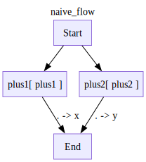
# with checkLogs(name='ladle.diagrams.flow'):
trace_steps = []
for trace in d.run(1):
trace.pprint()
trace_steps.append(trace.node_name[0])
assert (trace_steps ==['Start','plus1','plus2','End'] or
trace_steps ==['Start','plus2','plus1','End']),trace_steps
assert d.output == {'x': 2, 'y': 3}Node Start:
{'input': {0: 1}, 'output': 1}
================================================================================
Node plus1:
{'input': {0: 1}, 'output': 2}
================================================================================
Node plus2:
{'input': {0: 1}, 'output': 3}
================================================================================
Node End:
{'input': {'x': 2, 'y': 3}, 'output': {'x': 2, 'y': 3}}
================================================================================with pytest.raises(ValueError,match='cannot have multiple output edges with no condition'):
with Define('naive_flow',type='decision') as NaiveFlow:
V('plus1',plus1,inputs=['Start'],outputs=['End(x=.)'])
V('plus2',plus2,inputs=['Start'],outputs=['End(y=.)'])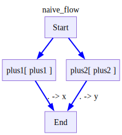
# with checkLogs(name='ladle.diagrams.validate'):
with Define('edge_types',type='decision') as EdgeTypes:
V('Conditional_node',plus1)
E('Start->Conditional_node')
V('Option1')
V('Default_option')
# by default, all edges we define are conditional,
# we can specify a condition for an edge by passing a function to the cond argument
E('Conditional_node->Option1',cond=mod2)
# not passing a condition means that this edge is the default edge
# each node that has outgoing conditional edges must have at least one default edge
E('Conditional_node->Default_option')
# we can also define a parallel edge by passing scope='parallel' to the E function
V('Parallel_node1',plus1)
V('Parallel_node2',plus2)
E('Option1->Parallel_node1',type='flow')
E('Option1->Parallel_node2',type='flow')
E('Parallel_node1->Parallel_end(x=.)',type='flow')
E('Parallel_node2->Parallel_end(y=.)',type='flow')
E('Parallel_end->End(**)')
E('Default_option->End')
# we can also read and write to state by using the State node in edge definitions.
# the port of the State node is the key of the state we would like to read from or write to
# the port of the node we are connecting to is the value we would like to write to the state
# if we want to read from the state, we can use the State.port notation
E('Start->state/start')
E('state/start->End(start_state=.)')
d = EdgeTypes()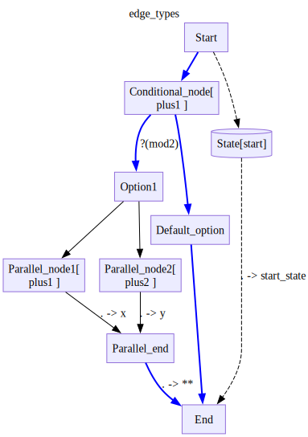
# with checkLogs(name='ladle.diagrams.flow'):
for trace in d.run(1):
# trace.pprint()
pass
assert d.output == {'x': 3, 'y': 4, 'start_state': 1} , d.output# with checkLogs(name='ladle.diagrams'):
for trace in d.run(0):
trace.pprint()
assert d.output == {0:1,'start_state':0}Node Start:
{'input': {0: 0}, 'output': 0}
================================================================================
Node Conditional_node:
{'input': {0: 0}, 'output': 1}
================================================================================
Node Default_option:
{'input': {0: 1}, 'output': 1}
================================================================================
Node End:
{'input': {0: 1, 'start_state': 0}, 'output': {0: 1, 'start_state': 0}}
================================================================================Custom state
from ladle.core import NamedLambda
plus1 = NamedLambda('plus1',lambda x: x+1)
from pydantic import BaseModel,ConfigDict,computed_field
# a custom state is any basemodel
class CustomState(BaseModel):
# we can allow arbitrary attributes by setting extra='allow'
# this is useful for defining on the fly state keys with normal behavior
model_config = ConfigDict(extra='allow')
history:list[int] = list()
def save(self,value):
self.history.append(value)
with Define('test1',state=CustomState) as D:
V('add',plus1)
# we can define a custom state class by passing it to the State function
# within the Define scope
E('Start->add')
E('add->End')
E('add->State/save')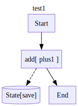
d=D()
for trace in d.run(input=1):
trace.pprint()
assert d.output == 2
assert d.state.model_dump() == {'history': [2]},d.state
assert d.finishedNode Start:
{'input': {0: 1}, 'output': 1}
================================================================================
Node add:
{'input': {0: 1}, 'output': 2}
================================================================================
Node End:
{'input': {0: 2}, 'output': 2}
================================================================================def plus1(x):
return x+1
with Define('test1_exp',state=CustomState) as D:
V('add',plus1)
# we can customize the state behaviour of a given state key by using the State function
# set_append=True means that the state value will be appended to the list of values for the given key
# we can also add custom getters and setters to a state key for more complex state behaviour
# getter is a function of the form (value)->(processed_value)
# setter is a function of the form (old_value,new_value)->(processed_value)
E('Start->add')
E('add->End')
E('add->State/save')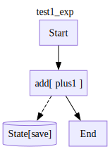
d=D()
for trace in d.run(input=1):
trace.pprint()
assert d.output == 2
assert d.state.model_dump() == {'history': [2]},d.state
assert d.finishedNode Start:
{'input': {0: 1}, 'output': 1}
================================================================================
Node add:
{'input': {0: 1}, 'output': 2}
================================================================================
Node End:
{'input': {0: 2}, 'output': 2}
================================================================================Read State
def plus1(x):
return x+1
with Define('test_state_read',type='decision') as D:
V('add',plus1,inputs=['Start'],outputs=['End(data=.)'])
E('state/outside_state->End(state_data=.)')
d=D()
with checkLogs(name='ladle.diagrstams.flow'):
for trace in d.run(input=1,state={'outside_state':10}):
trace.pprint()
d.output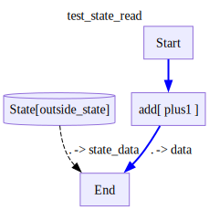
Node Start:
{'input': {0: 1}, 'output': 1}
================================================================================
Node add:
{'input': {0: 1}, 'output': 2}
================================================================================
Node End:
{ 'input': {'data': 2, 'state_data': 10},
'output': {'data': 2, 'state_data': 10}}
================================================================================{'data': 2, 'state_data': 10}Parallel graph
def plus1(x,**kwargs):
return x+1
# with checkLogs(name='__main__'):
with Define('test2',type='flow') as D:
V('add1',plus1)
V('add2',plus1)
V('Start',outputs=['add1','add2'])
V('prep_end',inputs=['add1(x=.)','add2(y=.)'])
E('prep_end->End')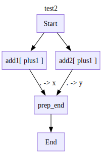
d = D()
for trace in d.run(1):
trace.pprint()
assert d.output == {'x': 2, 'y': 2}
assert d.finishedNode Start:
{'input': {0: 1}, 'output': 1}
================================================================================
Node add1:
{'input': {0: 1}, 'output': 2}
================================================================================
Node add2:
{'input': {0: 1}, 'output': 2}
================================================================================
Node prep_end:
{'input': {'x': 2, 'y': 2}, 'output': {'x': 2, 'y': 2}}
================================================================================
Node End:
{'input': {0: {'x': 2, 'y': 2}}, 'output': {'x': 2, 'y': 2}}
================================================================================Parallel with async functions
async def plus1async(x,**kwargs):
await asyncio.sleep(0.1)
return x+1
# with checkLogs(name='__main__'):
with Define('test',type='flow') as D:
V('add1',plus1async)
V('add2',plus1async)
V('Start',outputs=['add1','add2'])
V('prepend1',inputs=['add1(x)','add2(y)'])
E('prepend1->End')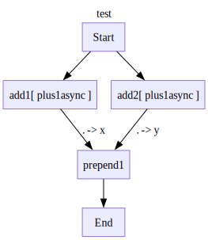
d = D()
for trace in d.run(1):
trace.pprint()
assert d.output == {'x': 2, 'y': 2}
assert d.finishedNode Start:
{'input': {0: 1}, 'output': 1}
================================================================================
Node add1:
{'input': {0: 1}, 'output': 2}
================================================================================
Node add2:
{'input': {0: 1}, 'output': 2}
================================================================================
Node prepend1:
{'input': {'x': 2, 'y': 2}, 'output': {'x': 2, 'y': 2}}
================================================================================
Node End:
{'input': {0: {'x': 2, 'y': 2}}, 'output': {'x': 2, 'y': 2}}
================================================================================Multiple edges from same node
def plus(x,y):
return x+y
# EXPLAIN start and end are by default
# with checkLogs(name='__main__'):
with Define('multiedge',type='flow') as D:
V('plus',plus,
inputs=['Start(x=a,y=b)'],
outputs=['End']
)
d = D()
for trace in d.run({'a':1,'b':2}):
pass
assert d.output == 3Unnamed ports for discarding inputs
def plus1(x):
return x+1
# EXPLAIN start and end are by default
with Define('unnamed_ports',type='flow') as D:
E('Start->state/start')
V('plus',plus1,
inputs=[
'Start(_)',
'state/start(x=.)'],
outputs=['End']
)
dot = draw_diagram(D,return_dot=True)
dot.source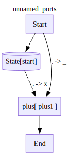
'digraph unnamed_ports {\n\tlabel=unnamed_ports labelloc=t rankdir=TB\n\tnode_0 [label=Start color="#9370DB" fillcolor="#ECECFF" shape=box style="solid,filled"]\n\tnode_1 [label="State[start]" color="#9370DB" fillcolor="#ECECFF" shape=cylinder style="solid,filled"]\n\tnode_2 [label="plus[ plus1 ]" color="#9370DB" fillcolor="#ECECFF" shape=box style="solid,filled"]\n\tnode_3 [label=End color="#9370DB" fillcolor="#ECECFF" shape=box style="solid,filled"]\n\tnode_0 -> node_1 [label="" style=dashed]\n\tnode_1 -> node_2 [label=". -> x" style=dashed]\n\tnode_0 -> node_2 [label=". -> _" color=black style=solid]\n\tnode_2 -> node_3 [color=black style=solid]\n}\n'd=D()
# with checkLogs(name='ladle.diagrams.flow'):
for trace in d.run(1):
pass
assert d.output == 2LLM dummy functions
import re
import itertools
class MessageAdder():
def __init__(self,to_add):
self.to_add = to_add
def __call__(self,**message):
content = message.get('content',0)
if isinstance(content,int):
new_cont = content + self.to_add
elif isinstance(content,str):
new_cont = f'{content} _ '
else:
raise ValueError(f'content {content} must be an int or a string')
return {'role':'adder','content':new_cont}
def __str__(self):
return f'MessageAdder({self.to_add})'
def MessageSum(**kwargs):
sum = 0
for key,value in kwargs.items():
count = value['content']
if isinstance(count,int):
sum+=count
return {'role':'sum','content':sum}
class FString():
def __init__(self,s):
self.s=s
def __call__(self,**kwargs):
return self.s.format(**kwargs)
class CycleOptions():
def __init__(self,opts):
self.opts = opts
self.cycle = itertools.cycle(opts)
def __call__(self,*args,**kwargs):
if args:
kwargs = args[0]
return kwargs | {'role':'chooser','choice':next(self.cycle)}
def __str__(self):
return f'''CycleOptions({",".join(self.opts)})'''
class is_mod():
def __init__(self,mod):
self.mod = mod
def __call__(self, x):
return x % self.mod == 0
def __repr__(self):
return f"is_mod({self.mod})"
class is_eq():
def __init__(self,val):
self.val = val
def __call__(self, x):
return x == self.val
def __repr__(self):
return f"is_eq({self.val})"
def concat(x,y,z):
return (f'{x}_{y}_{z}')self loop
def is3(x):
return x['content'] == 3
with Define('selfLoop',type='decision') as D:
V('add1',MessageAdder(1),
inputs=['Start(**)'],
outputs=[
('End(**)',is3),
'add1(**)'
])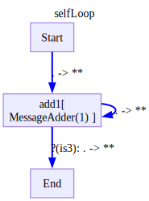
d=D()
# with checkLogs(name='ladle.diagrams'):
for i,trace in enumerate(d.run(input={'role':'human','content':0})):
# this is how we can debug an infinite loop, have it stop after a certain number of iterations
if i > 5:
break
trace.pprint()
assert d.output == {'role':'adder','content': 3}
assert d.finishedNode Start:
{ 'input': {'content': 0, 'role': 'human'},
'output': {'content': 0, 'role': 'human'}}
================================================================================
Node add1:
{ 'input': {'content': 0, 'role': 'human'},
'output': {'content': 1, 'role': 'adder'}}
================================================================================
Node add1:
{ 'input': {'content': 1, 'role': 'adder'},
'output': {'content': 2, 'role': 'adder'}}
================================================================================
Node add1:
{ 'input': {'content': 2, 'role': 'adder'},
'output': {'content': 3, 'role': 'adder'}}
================================================================================
Node End:
{ 'input': {'content': 3, 'role': 'adder'},
'output': {'content': 3, 'role': 'adder'}}
================================================================================Choosing tools
#with checkLogs(name='__main__'):
def is1(x):
return re.match('^1$',x['choice'])!=None
def is10(x):
return re.match('^10$',x['choice'])!=None
from typing import Any,Annotated
class CustomState(BaseModel):
model_config = ConfigDict(extra='allow')
mem1: Annotated[list[Any],list.append] = list()
# mem1:list[Any] = list()
# def add_mem1(self,value):
# self.mem1.append(value)
with Define('choosing_tools',type='decision',state=CustomState) as D:
E('Start->add1(**)')
V('add1',MessageAdder(1),outputs=[
'choose_action(**)',
'state/mem1'
])
V('add10',MessageAdder(10),outputs=[
'choose_action(**)',
'state/mem10'
])
V('choose_action',CycleOptions(['1','10','1','10','finish']),
outputs=[
('add1(**)',is1),
('add10(**)',is10),
'prep_end(final_out=content)'
]
)
V('prep_end',
inputs=[
'State/mem1(ones=.)',
'State/mem10(last_ten=.)',
],
outputs=[
'End'
]
)# an ID step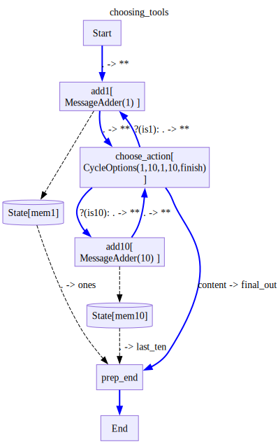
d = D()
# with checkLogs(name='ladle.diagrams'):
for trace in d.run({'role':'human','count':0}):
trace.pprint(skip_passthrough=True)
assert d.output == {
'final_out': 23,
'ones': [{'role': 'adder', 'content': 1},
{'role': 'adder', 'content': 2},
{'role': 'adder', 'content': 13}],
'last_ten': {'role': 'adder', 'content': 23}
},d.outputNode add1:
{ 'input': {'count': 0, 'role': 'human'},
'output': {'content': 1, 'role': 'adder'}}
================================================================================
Node choose_action:
{ 'input': {'content': 1, 'role': 'adder'},
'output': {'choice': '1', 'content': 1, 'role': 'chooser'}}
================================================================================
Node add1:
{ 'input': {'choice': '1', 'content': 1, 'role': 'chooser'},
'output': {'content': 2, 'role': 'adder'}}
================================================================================
Node choose_action:
{ 'input': {'content': 2, 'role': 'adder'},
'output': {'choice': '10', 'content': 2, 'role': 'chooser'}}
================================================================================
Node add10:
{ 'input': {'choice': '10', 'content': 2, 'role': 'chooser'},
'output': {'content': 12, 'role': 'adder'}}
================================================================================
Node choose_action:
{ 'input': {'content': 12, 'role': 'adder'},
'output': {'choice': '1', 'content': 12, 'role': 'chooser'}}
================================================================================
Node add1:
{ 'input': {'choice': '1', 'content': 12, 'role': 'chooser'},
'output': {'content': 13, 'role': 'adder'}}
================================================================================
Node choose_action:
{ 'input': {'content': 13, 'role': 'adder'},
'output': {'choice': '10', 'content': 13, 'role': 'chooser'}}
================================================================================
Node add10:
{ 'input': {'choice': '10', 'content': 13, 'role': 'chooser'},
'output': {'content': 23, 'role': 'adder'}}
================================================================================
Node choose_action:
{ 'input': {'content': 23, 'role': 'adder'},
'output': {'choice': 'finish', 'content': 23, 'role': 'chooser'}}
================================================================================parallel flows
with Define('simple parallel',type='flow',direction='LR') as D:
V('add1',MessageAdder(1),outputs=['add2(**)','add10(**)'])
V('add2',MessageAdder(2))
V('add10',MessageAdder(10))
V('conc',concat,inputs=[
'Start(x=content)',
'add2(z=content)',
'add10(y=content)'
])
V('prep_out',inputs=[
'State/start(start_value)',
'conc(concatenation)'
])
E('Start->State/start')
E('Start->add1(**)')
E('prep_out->End')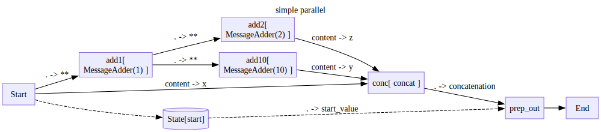
d = D()
# with checkLogs(name='ladle.diagrams.flow'):
for trace in d.run({'role':'human','content':1}):
pass
assert d.output == {'concatenation': '1_12_4', 'start_value': {'role': 'human', 'content': 1}},d.output
assert d.state.model_dump() == {'start': {'role': 'human', 'content': 1}} , d.state
d.stateBaseModelExtra(start={'role': 'human', 'content': 1})Parallel and choice
with Define('add5',draw=False) as Add5:
V('add',MessageAdder(5),inputs=['Start(**)'],outputs=['End(**)'])
with Define('add10',draw=False) as Add10:
V('add_first',Add5)
V('add_second',Add5)
E('Start->add_first(**)')
E('add_first->add_second(**)')
E('add_second->End(**)')
with Define('add100',draw=False) as Add100:
V('add',MessageAdder(100),inputs=['Start(**)'],outputs=['End(**)'])
with Define('paralell2',type='flow') as Parallel2:
def is112(x):
return x['content'] == 112
V('Start',MessageAdder(1))
with Scope('flow'):
V('add10',Add10,inputs=['Start(**)'])
V('add100',Add100,inputs=['Start(**)'])
V('End',MessageSum,inputs=['add10(y)','add100(x)'])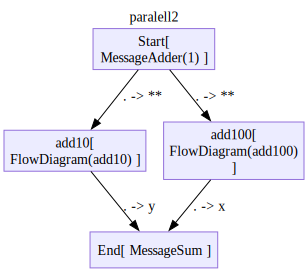
d = Parallel2()
# with checkLogs(name='ladle.diagrams.flow'):
for trace in d.run({'role':'human','content':0}):
trace.pprint()
assert d.output == {'role': 'sum', 'content': 112}Node Start:
{ 'input': {'content': 0, 'role': 'human'},
'output': {'content': 1, 'role': 'adder'}}
================================================================================
Node add100.Start:
{ 'input': {'content': 1, 'role': 'adder'},
'output': {'content': 1, 'role': 'adder'}}
================================================================================
Node add10.Start:
{ 'input': {'content': 1, 'role': 'adder'},
'output': {'content': 1, 'role': 'adder'}}
================================================================================
Node add100.add:
{ 'input': {'content': 1, 'role': 'adder'},
'output': {'content': 101, 'role': 'adder'}}
================================================================================
Node add10.add_first.Start:
{ 'input': {'content': 1, 'role': 'adder'},
'output': {'content': 1, 'role': 'adder'}}
================================================================================
Node add100.End:
{ 'input': {'content': 101, 'role': 'adder'},
'output': {'content': 101, 'role': 'adder'}}
================================================================================
Node add100:
{ 'input': {'content': 1, 'role': 'adder'},
'output': {'content': 101, 'role': 'adder'}}
================================================================================
Node add10.add_first.add:
{ 'input': {'content': 1, 'role': 'adder'},
'output': {'content': 6, 'role': 'adder'}}
================================================================================
Node add10.add_first.End:
{ 'input': {'content': 6, 'role': 'adder'},
'output': {'content': 6, 'role': 'adder'}}
================================================================================
Node add10.add_first:
{ 'input': {'content': 1, 'role': 'adder'},
'output': {'content': 6, 'role': 'adder'}}
================================================================================
Node add10.add_second.Start:
{ 'input': {'content': 6, 'role': 'adder'},
'output': {'content': 6, 'role': 'adder'}}
================================================================================
Node add10.add_second.add:
{ 'input': {'content': 6, 'role': 'adder'},
'output': {'content': 11, 'role': 'adder'}}
================================================================================
Node add10.add_second.End:
{ 'input': {'content': 11, 'role': 'adder'},
'output': {'content': 11, 'role': 'adder'}}
================================================================================
Node add10.add_second:
{ 'input': {'content': 6, 'role': 'adder'},
'output': {'content': 11, 'role': 'adder'}}
================================================================================
Node add10.End:
{ 'input': {'content': 11, 'role': 'adder'},
'output': {'content': 11, 'role': 'adder'}}
================================================================================
Node add10:
{ 'input': {'content': 1, 'role': 'adder'},
'output': {'content': 11, 'role': 'adder'}}
================================================================================
Node End:
{ 'input': { 'x': {'content': 101, 'role': 'adder'},
'y': {'content': 11, 'role': 'adder'}},
'output': {'content': 112, 'role': 'sum'}}
================================================================================with Define('paralell with choice',type='decision') as D:
def is112(x):
return x['content'] == 112
V('add1',MessageAdder(1),inputs=['Start(**)'])
with Scope('flow'):
V('add10',Add10,inputs=['add1(**)'])
V('add100',Add100,inputs=['add1(**)'])
V('sum',MessageSum,inputs=['add10(y)','add100(x)'])
E('sum->End')
E('sum->add1(**)',cond=is112)
#EXPLAIN what are legal parallel cut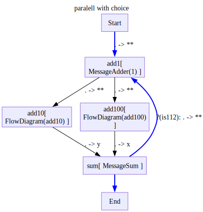
d = D()
# with checkLogs(name='ladle.diagrams'):
for trace in d.run({'role':'human','content':0}):
# trace.pprint()
pass
assert d.output == {'role': 'sum', 'content': 336}Parallel with break
with Define('add5',draw=False) as Add5:
V('add',MessageAdder(5),inputs=['Start(**)'],outputs=['End(**)'])
with Define('add10',draw=False) as Add10:
V('add_first',Add5)
V('add_second',Add5)
E('Start->add_first(**)')
E('add_first->add_second(**)')
E('add_second->End(**)')
with Define('add100',draw=False) as Add100:
V('add',MessageAdder(100),inputs=['Start(**)'],outputs=['End(**)'])# with checkLogs(name="__main__"):
with Define('paralell with break',type='decision') as D:
def is112(x):
return x['content'] == 112
V('add1',MessageAdder(1),inputs=['Start(**)'])
with Scope('flow'):
V('add10',Add10,inputs=['add1(**)'])
V('add100',Add100,inputs=['add1(**)'])
V('sum',MessageSum,inputs=['add10(y)','add100(x)'])
V('break',is_break=True)
E('sum->End')
E('sum->break',cond=is112)
E('break->add1(**)')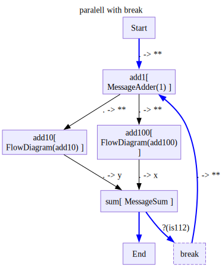
d = D()
output = d.run_all({'role':'human','content':0})
assert output == {'role': 'sum', 'content': 112}
assert d.finished == False
new_input = {'role':'human','content':157}
output = d.run_all(new_input)
assert output == {'role': 'sum', 'content': 426}
assert d.finishedNested breaks
def is_3(x):
return x['content'] == 3
def is_10(x):
return x['content'] == 10
with Define('inner_break',type='decision',direction='LR') as InnerD:
V('add',MessageAdder(0),inputs=['Start(**)'],outputs=['break'])
V('break',is_break=True,outputs=['add(**)',('End',is_3)])
with Define('outer_break',type='decision',direction='LR') as OuterD:
V('inner',InnerD,inputs=['Start(**)'],outputs=['break'])
V('break',is_break=True,outputs=['inner(**)',('End',is_10)])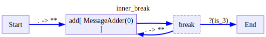
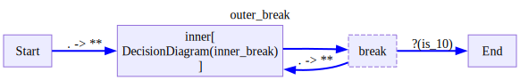
what we expect to happen here, is that: * We will enter the inner diagram, we wont exit it until we get a 3 * once we get a 3 we will exit the inerdiagram and hit the break on the outer diagram * we will only exit the outer diagram when we get a 10
So to exit, we will need to get a 3 followed by a 10
inputs = [
{'role':'human','content':0},
{'role':'human','content':1},
{'role':'human','content':2},
{'role':'human','content':3}, # exit inner the first time
{'role':'human','content':5}, # go to outer and then to inner again
{'role':'human','content':10}, # 10 wont get us out of the inner diagram
{'role':'human','content':3}, # exit inner the second time
{'role':'human','content':10}, # 10 will get us out of the outer diagram
]
outer_d = OuterD()
while True:
input = inputs.pop(0)
for trace in outer_d.run(input):
print(f'{trace.node_name[0]:<16} == {trace.input_}')
if outer_d.finished:
break
assert outer_d.output == {'role': 'human', 'content': 10}
assert inputs == []Start == {'role': 'human', 'content': 0}
inner == {'role': 'human', 'content': 0}
inner == {'role': 'human', 'content': 0}
inner == {'role': 'human', 'content': 1}
inner == {'role': 'human', 'content': 1}
inner == {'role': 'human', 'content': 2}
inner == {'role': 'human', 'content': 2}
inner == {'role': 'human', 'content': 3}
inner == {0: {'role': 'human', 'content': 3}}
inner == {'role': 'human', 'content': 3}
break == {'role': 'human', 'content': 5}
inner == {'role': 'human', 'content': 5}
inner == {'role': 'human', 'content': 5}
inner == {'role': 'human', 'content': 10}
inner == {'role': 'human', 'content': 10}
inner == {'role': 'human', 'content': 3}
inner == {0: {'role': 'human', 'content': 3}}
inner == {'role': 'human', 'content': 3}
break == {'role': 'human', 'content': 10}
End == {0: {'role': 'human', 'content': 10}}Cant break inside parallel
with pytest.raises(ValueError,match='Breakpoints are not allowed in a Flow diagram'):
with Define('simple parallel',type='flow') as d:
V('add1',MessageAdder(1))
V('add2',InnerD)
V('add10',MessageAdder(10))
V('conc',concat)
V('prep_out')
E('Start->State/start')
E('Start->conc(x=concatenation)')
E('Start->add1')
E('add1->add10')
E('add1->add2')
E('add10->conc(y=concatenation)')
E('add2->conc(z=concatenation)')
E('conc->prep_out(concatenation=concatenation)')
E('State/start->prep_out(start_value=start)')
E('prep_out->End')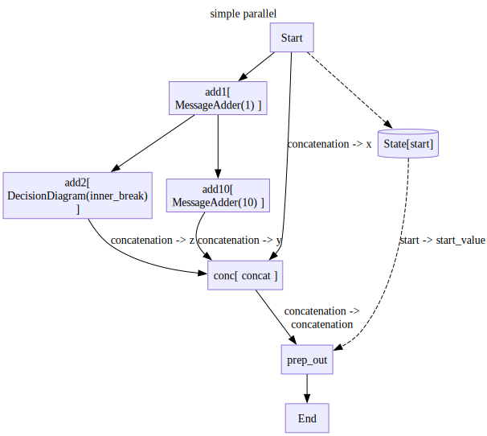
Far ancestor writing to state
from itertools import pairwiseclass CustomState(BaseModel):
model_config = ConfigDict(extra='allow')
history: Annotated[list[Any],list.append] = list()
with Define('far ancestor writing to state',type='flow',state=CustomState) as D:
a = MessageAdder(0)
for u in ['a','b','c']:
V(u,a)
E(f'{u}->state/history')
for u,v in pairwise(['Start','a','b','c','End']):
E(f'{u}->{v}(**)')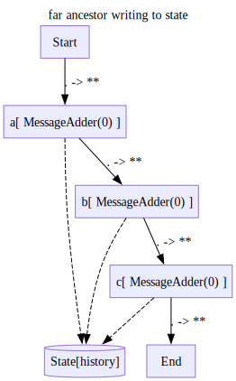
# with checkLogs(name='__main__'):
d=D()
for trace in d.run({'role':'human','content':0}):
pass
assert d.state.model_dump() == {'history': [{'role': 'adder', 'content': 0},
{'role': 'adder', 'content': 0},
{'role': 'adder', 'content': 0}]}Initialising state
def plus(x,y):
return x+y
with Define('init_state_no_clash',type='decision') as NoClash:
V('add1',plus,
inputs=['Start(x)','State/init(y)'],
outputs=['State/first_sum']
)
V('break',is_break=True,inputs=['add1(x)'])
V('add2',plus,
inputs=['break(x)','State/first_sum(y)'],
outputs=['End']
)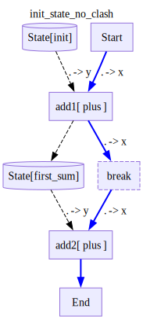
inputs = [
10,
100
]
outputs = []
d=NoClash()
while True:
# note that the init state is preserved between runs
for trace in d.run(input=inputs.pop(0),state={'init':1000}):
pass
outputs.append(d.output)
if d.finished:
break
assert outputs == [1010,1110],outputsdef plus(x,y):
return x+y
class StateRequiresInit(BaseModel):
init : int
with Define('init_state_with_clash',type='decision',state=StateRequiresInit) as D:
V('add1',plus,
inputs=['Start(x)','State/init(y)'],
outputs=['State/init']
)
V('break',is_break=True,inputs=['add1(x)'])
V('add2',plus,
inputs=['break(x)','State/init(y)'],
outputs=['End']
)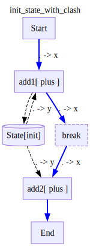
inputs = [
10,
100
]
outputs = []
d=D()
while True:
# note that the internal state overides the state given to the run method
# that is why after the breakpoint, state.init is 1010 and not 1000
for trace in d.run(input=inputs.pop(0),state={'init':1000}):
pass
outputs.append(d.output)
if d.finished:
break
assert outputs == [1010,1110],outputs# make sure that two calls to the Same D dont share state
d=D()
outputs = []
for trace in d.run(input=10,state={'init':1000}):
pass
outputs.append(d.output)
for trace in d.run(input=100):
pass
outputs.append(d.output)
assert d.finished
assert outputs == [1010,1110],outputsMissing input state
d = NoClash()
with pytest.raises(AttributeError,match='''object has no attribute '''):
# # with checkLogs(name='ladle.diagrams'):
for trace in d.run(input=10):
passStateful nodes and Serialization
class MessageCounter():
def __init__(self):
self.history = []
def __call__(self,message):
self.history.append(message['content'])
return {'role':'counter','content':str(self.history)}
def __str__(self):
return f'MessageCounter({self.history})'
def __repr__(self):
return f'<at #{id(self)}>{self.__str__()}'
def reset(self):
self.history = []
def dump_state(self):
return self.history
def load_state(self,state_object):
self.history = state_objectclass CustomState(BaseModel):
timer:int
counter_outputs: Annotated[list[Any],list.append] = list()
def count_down(self,value):
self.timer = max(0,self.timer-1)
return self.timer
def is_timeout(x):
return x['timer'] == 'TimerOut'
with Define('stateful_adder',type='decision',state=CustomState) as StateFulAdder:
V('router',
inputs=['Start(message)','state/timer(timer)'],
outputs=['adder(message=message)']
)
E('router->End',cond=is_timeout)
V('adder',MessageCounter(),
outputs=['state/counter_outputs','state/count_down'])
V('break',is_break=True,inputs=['adder'],outputs=['router(message)'])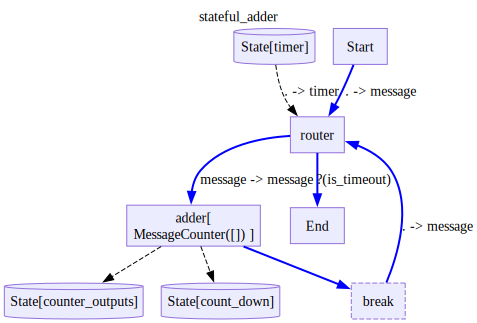
# make 2 copies of the diagram
copy1 = StateFulAdder()
copy2 = StateFulAdder()
# run copy1
for trace in copy1.run({'role':'human','content':1},state={'timer':4}):
pass
assert copy1.output == {'role':'counter','content':'[1]'},copy1.output
assert copy1.finished == False
# make sure copy2 didnt change
assert copy2.finished == None
assert copy2.state == None
# load the state from copy1 into copy2
saved_state = copy1.dump_state()
copy2.load_state(saved_state)
# check copy2 has the same output as copy1
assert copy2.output == copy1.output
assert copy2.finished == copy1.finished
# Continue copy1 and copy2 with different inputs
# note that we dont need to pass the state again, it is preserved from the copy1 run
res1 = copy1.run_all({'role':'human','content':2})
res2 = copy2.run_all({'role':'human','content':3})
# make sure we got different outputs
assert res1 == {'role': 'counter', 'content': '[1, 2]'}, res1
assert res2 == {'role': 'counter', 'content': '[1, 3]'}, res2Conflicting ports
with pytest.raises(ValueError,match='has conflicting input ports') as e:
with Define('conflicting_ports',type='decision') as d:
V('Conditional_node',plus1)
E('Start->Conditional_node')
V('Option1')
V('Default_option')
# by default, all edges we define are conditional,
# we can specify a condition for an edge by passing a function to the cond argument
E('Conditional_node->Option1',cond=mod2)
# not passing a condition means that this edge is the default edge
# each node that has outgoing conditional edges must have at least one default edge
E('Conditional_node->Default_option')
# we can also define a flow edge by passing scope='flow' to the E function
V('Parallel_node1',plus1)
V('Parallel_node2',plus2)
E('Option1->Parallel_node1',type='flow')
E('Option1->Parallel_node2',type='flow')
E('Parallel_node1->Parallel_end',type='flow')
E('Parallel_node2->Parallel_end',type='flow')
E('Parallel_end->End')
E('Default_option->End')
# we can also read and write to state by using the State node in edge definitions.
# the port of the State node is the key of the state we would like to read from or write to
# the port of the node we are connecting to is the value we would like to write to the state
# if we want to read from the state, we can use the State.port notation
E('Start->State/start')
E('State/start->End(start_state)')
print(e.value.args[0])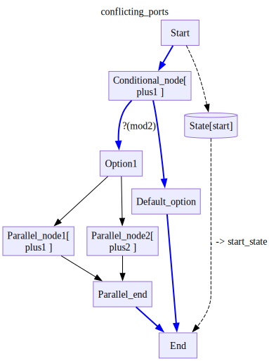
Node Parallel_end has conflicting input ports '[0]'
between its father nodes and/or state {'input_state_ports': [], 'Parallel_node1': [0], 'Parallel_node2': [0]}Exception during condition
with Define('selfLoop',type='decision') as D:
def is12(x):
return x['content'] == 12
def istoobig(x):
return x['shmontest'] > 12
def zeroup (x):
x['content'] = 0
return x
V('too_big')
V('adder',MessageAdder(4),
inputs=['Start(**)','too_big(**)'],
outputs=[
('End',is12),
('too_big(**)',istoobig),
'adder(**)'
])
V('too_big',zeroup)
d=D()
with pytest.raises(ValueError,match='When choosing next node after adder') as e:
for i,trace in enumerate(d.run(input={'role':'human','content':0})):
pass
print(e.value.args[0])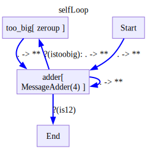
When choosing next node after adder:
Condition function <function istoobig>({'role': 'adder', 'content': 4}) returned
KeyError:''shmontest''defining conditional edges after node definition
with pytest.raises(ValueError,match='Edge to_big->adder already exists') as e:
with Define('selfLoop',type='decision') as D:
def is12(x):
return x['content'] == 12
def istobig(x):
return x['content'] > 12
def zeroup (x):
return {0: ('adder', 0)}
V('to_big')
V('adder',MessageAdder(4),
inputs=['Start','to_big'],
outputs=[
('End',is12),
('to_big',istobig),
'adder'
])
E('to_big->adder', lambda x: zeroup(x['content']))
print(e.value.args[0])When adding edge 'to_big->adder' with condition <function <lambda>>, type None and edge_data {'edge_type': 'edge', 'mapping': {0: ('.',)}}
Original error: Edge to_big->adder already exists, edge: to_big->adder
Batch processing
Regular batch processing
import time
import asyncio
class MakeItems:
def __init__(self,num_items,delta,sleep):
self.num_items = num_items
self.delta = delta
self.sleep = sleep
def __call__(self,x):
time.sleep(self.sleep)
return [x+i*self.delta for i in range(self.num_items)]
def __str__(self):
return f'MakeItems(num_items={self.num_items},delta={self.delta},sleep={self.sleep})'
class MakeItemsAsync:
def __init__(self,num_items,delta,sleep):
self.num_items = num_items
self.delta = delta
self.sleep = sleep
async def __call__(self,x):
await asyncio.sleep(self.sleep)
return [x+i*self.delta for i in range(self.num_items)]
def __str__(self):
return f'MakeItemsAsync(num_items={self.num_items},delta={self.delta},sleep={self.sleep})'
def add_to_arr(arr,x):
return [a+x for a in arr]
def plus(x,y):
return x+y
def sort(arr):
return sorted(arr)
async def asort(arr):
return sorted(arr)with Define('batch_processing_sync',type='flow') as D:
V('make_items',MakeItems(3,delta = 1,sleep = 0.1),inputs=['Start'])
V('more_items',MakeItems(3,delta = 10,sleep = 0.1),
for_each=['x'],
inputs=['make_items(x)'],
outputs=['End'], flat=True
)
V('End',sort)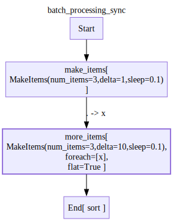
# with checkLogs(name='ladle.diagrams.flow'):
d=D()
for trace in d.run(0):
trace.pprint()
assert d.output == [0, 1, 2, 10, 11, 12, 20, 21, 22]Node Start:
{'input': {0: 0}, 'output': 0}
================================================================================
Node make_items:
{'input': {0: 0}, 'output': [0, 1, 2]}
================================================================================
Node more_items[2]:
{'input': {'x': 2}, 'output': [2, 12, 22]}
================================================================================
Node more_items[1]:
{'input': {'x': 1}, 'output': [1, 11, 21]}
================================================================================
Node more_items[0]:
{'input': {'x': 0}, 'output': [0, 10, 20]}
================================================================================
Node End:
{ 'input': {0: [2, 12, 22, 1, 11, 21, 0, 10, 20]},
'output': [0, 1, 2, 10, 11, 12, 20, 21, 22]}
================================================================================Batch processing with async functions
with Define('batch_processing_async',type='flow') as D:
V('make_items',MakeItemsAsync(3,delta = 1,sleep = 0.1),inputs=['Start'])
V('more_items',MakeItemsAsync(3,delta = 10,sleep = 0.1),
for_each=['x'],
inputs=['make_items(x)'],
outputs=['End'], flat=True
)
V('End',asort)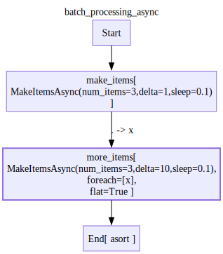
# with checkLogs(name='ladle.diagrams.flow'):
d=D()
for trace in d.run(0):
trace.pprint()
assert d.output == [0, 1, 2, 10, 11, 12, 20, 21, 22]Node Start:
{'input': {0: 0}, 'output': 0}
================================================================================
Node make_items:
{'input': {0: 0}, 'output': [0, 1, 2]}
================================================================================
Node more_items[0]:
{'input': {'x': 0}, 'output': [0, 10, 20]}
================================================================================
Node more_items[1]:
{'input': {'x': 1}, 'output': [1, 11, 21]}
================================================================================
Node more_items[2]:
{'input': {'x': 2}, 'output': [2, 12, 22]}
================================================================================
Node End:
{ 'input': {0: [0, 10, 20, 1, 11, 21, 2, 12, 22]},
'output': [0, 1, 2, 10, 11, 12, 20, 21, 22]}
================================================================================import time
import asyncio
class MakeItems:
def __init__(self,num_items,delta,sleep):
self.num_items = num_items
self.delta = delta
self.sleep = sleep
def __call__(self,x):
time.sleep(self.sleep)
return [x+i*self.delta for i in range(self.num_items)]
def __str__(self):
return f'MakeItems(num_items={self.num_items},delta={self.delta},sleep={self.sleep})'
class MakeItemsAsync:
def __init__(self,num_items,delta,sleep):
self.num_items = num_items
self.delta = delta
self.sleep = sleep
async def __call__(self,x):
await asyncio.sleep(self.sleep)
return [x+i*self.delta for i in range(self.num_items)]
def __str__(self):
return f'MakeItemsAsync(num_items={self.num_items},delta={self.delta},sleep={self.sleep})'
def sum_all(*arr):
return sum(arr)
def add_to_arr(arr,x):
return [a+x for a in arr]
def plus(x,y):
return x+y
def sort(arr):
return sorted(arr)
async def asort(arr):
return sorted(arr)
def concat(arr1,arr2):
return arr1+arr2Cartesian product of input streams
with Define('batch_processing_sleep_product',type='flow',direction='LR') as D:
V('one',MakeItemsAsync(2,1,sleep=0.05),inputs=['Start(0=1)'])
V('two',MakeItemsAsync(2,100,sleep=0.10),inputs=['Start(0=2)'])
V('three',MakeItemsAsync(2,10000,sleep=0.2),inputs=['Start(0=3)'])
V('sum',sum_all,inputs=['one(0)','two(1)','three(2)'],for_each=[0,1,2])
V('End',sort,inputs=['sum'])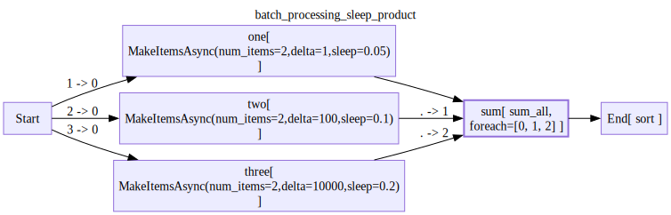
d=D()
for trace in d.run({1:10,2:1000,3:100000}):
# trace.pprint()
pass
assert d.output == [101010, 101011, 101110, 101111, 111010, 111011, 111110, 111111]Using for_each with both stream and non stream inputs
with Define('batch_processing_comb',type='flow') as D:
V('non_stream_first',add_to_arr,inputs=['Start(arr)','State/x(x)'])
V('stream_first',MakeItemsAsync(3,10,sleep=0.05),inputs=['Start(x)'],for_each=['x'],flat=True)
V('non_stream_second',add_to_arr,inputs=['non_stream_first(_)','stream_first(arr)','State/y(x)'])
V('stream_second',add_to_arr,inputs=['stream_first(x)','non_stream_first(arr)'],for_each=['x'],flat=True)
V('Concat',concat,inputs=['non_stream_second(0)','stream_second(1)'])
V('End',sort,inputs=['Concat'])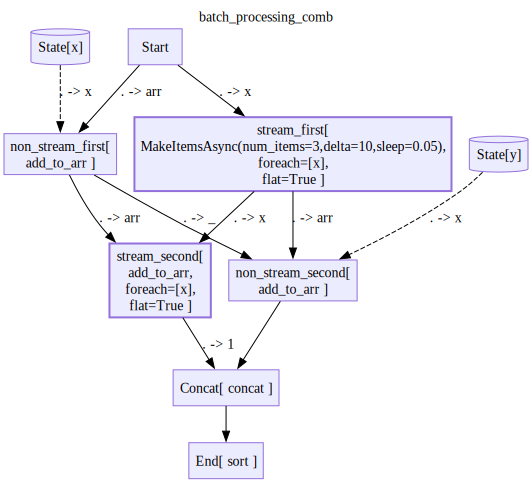
# with checkLogs(name='ladle.diagrams.flow'):
d=D()
for trace in d.run([0],state={'x':100,'y':1000}):
trace.pprint()
assert d.output == [100, 110, 120, 1000, 1010, 1020]Node Start:
{'input': {0: [0]}, 'output': [0]}
================================================================================
Node non_stream_first:
{'input': {'arr': [0], 'x': 100}, 'output': [100]}
================================================================================
Node stream_first[0]:
{'input': {'x': 0}, 'output': [0, 10, 20]}
================================================================================
Node stream_second[0]:
{'input': {'arr': [100], 'x': 0}, 'output': [100]}
================================================================================
Node non_stream_second:
{'input': {'arr': [0, 10, 20], 'x': 1000}, 'output': [1000, 1010, 1020]}
================================================================================
Node stream_second[1]:
{'input': {'arr': [100], 'x': 10}, 'output': [110]}
================================================================================
Node stream_second[2]:
{'input': {'arr': [100], 'x': 20}, 'output': [120]}
================================================================================
Node Concat:
{ 'input': {0: [1000, 1010, 1020], 1: [100, 110, 120]},
'output': [1000, 1010, 1020, 100, 110, 120]}
================================================================================
Node End:
{ 'input': {0: [1000, 1010, 1020, 100, 110, 120]},
'output': [100, 110, 120, 1000, 1010, 1020]}
================================================================================Nested diagrams in foreach
async def add_sleep(x):
await asyncio.sleep(0.1)
return x+1with Define('async_adder')as AsyncAdd:
V('add',add_sleep,inputs=['Start(x=x)'],outputs=['End'])
async_add=AsyncAdd()
for trace in async_add.run({'x':0}):
trace.pprint()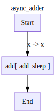
Node Start:
{'input': {'x': 0}, 'output': {'x': 0}}
================================================================================
Node add:
{'input': {'x': 0}, 'output': 1}
================================================================================
Node End:
{'input': {0: 1}, 'output': 1}
================================================================================with Define('nested_foreach',type='flow') as D:
V('generate',MakeItemsAsync(3,10,sleep=0.05),inputs=['Start(**)'])
V('add',AsyncAdd,inputs=['generate(x=.)'],for_each=['x'])
V('End',sort,inputs=['add'])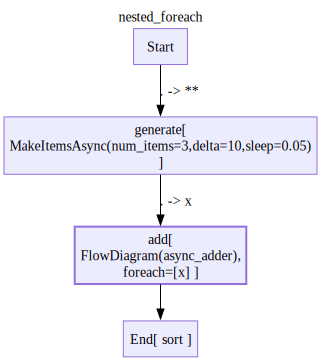
d=D()
for trace in d.run({'x':0}):
trace.pprint()
assert d.output == [1, 11, 21]Node Start:
{'input': {'x': 0}, 'output': {'x': 0}}
================================================================================
Node generate:
{'input': {'x': 0}, 'output': [0, 10, 20]}
================================================================================
Node add[0].Start:
{'input': {'x': 0}, 'output': {'x': 0}}
================================================================================
Node add[2].Start:
{'input': {'x': 20}, 'output': {'x': 20}}
================================================================================
Node add[1].Start:
{'input': {'x': 10}, 'output': {'x': 10}}
================================================================================
Node add[0].add:
{'input': {'x': 0}, 'output': 1}
================================================================================
Node add[2].add:
{'input': {'x': 20}, 'output': 21}
================================================================================
Node add[1].add:
{'input': {'x': 10}, 'output': 11}
================================================================================
Node add[0].End:
{'input': {0: 1}, 'output': 1}
================================================================================
Node add[2].End:
{'input': {0: 21}, 'output': 21}
================================================================================
Node add[1].End:
{'input': {0: 11}, 'output': 11}
================================================================================
Node add[0]:
{'input': {'x': 0}, 'output': 1}
================================================================================
Node add[1]:
{'input': {'x': 10}, 'output': 11}
================================================================================
Node add[2]:
{'input': {'x': 20}, 'output': 21}
================================================================================
Node End:
{'input': {0: [1, 11, 21]}, 'output': [1, 11, 21]}
================================================================================Text splitting
sample_doc = {'text':"""
The elephant is one of the most remarkable creatures on Earth. Known for their intelligence and complex social structures, elephants form deep family bonds that can last a lifetime. These gentle giants possess remarkable memory capabilities and demonstrate emotional behaviors like mourning their dead. Their distinctive trunks, containing over 40,000 muscles, serve multiple purposes from gathering food to expressing affection.
The arctic fox is a fascinating animal that has adapted perfectly to life in the extreme cold. During winter, its thick white fur provides both insulation and camouflage in the snowy landscape, while in summer its coat turns brownish-gray to blend with the tundra. These resourceful predators can survive temperatures as low as -50°C (-58°F) and will travel vast distances across the Arctic ice in search of food, often following polar bears to scavenge their leftovers.
The octopus stands out as one of the ocean's most intelligent invertebrates. With nine brains (one central brain and eight additional ones in each arm), these cephalopods can solve complex puzzles, open jars, and even use tools. Their remarkable ability to change both color and texture allows them to perfectly mimic their surroundings, making them masters of disguise. Despite their impressive capabilities, most octopus species live only 1-2 years, making their intelligence even more remarkable given their short lifespan.
""",
'id':'animal_book'
}
def splitter(doc):
doc_id = doc['id']
text = doc['text']
return [{'text':chunk.strip(),'id':f'{doc_id}_{i}'} for i,chunk in enumerate(text.split('\n\n'))]
def summarizer(text):
return text[:20]with Define('Distilation Rag Uploader',type='flow') as D:
V('split_texts',splitter,inputs=['Start(doc=.)'],for_each=['doc'],flat=True)
V('summarize_texts',summarizer,inputs=['split_texts(text=text)'],for_each=['text'])
V('End',sort,inputs=['summarize_texts'])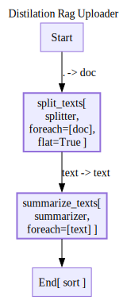
d = D()
for trace in d.run([sample_doc]):
# trace.pprint()
pass
assert d.output == ['The arctic fox is a ', 'The elephant is one ', 'The octopus stands o'],d.outputExport
# TODO
# for trace in d.run({'pdfs':['path/to/pdf.pdf','path/to/pdf2.pdf']}):
# # TODO make pprint to log
# # make progress bars for parallel pipelines with multiple items
# # see this https://stackoverflow.com/a/78127892
# trace.to_logger()
#TODO make sure nested objects in the input,output are also pprinted (ie data classes with alot of field)